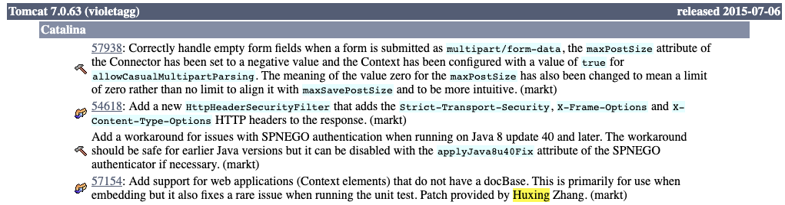
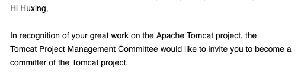
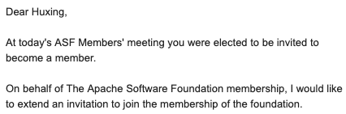

From 0 to Member: 成为Apache Member之路
Contents
前言
2019年5月4日，Apache基金会官方Blog中宣布全球新增40位Apache Member，我有幸当选其中之一。全球共有771位ASF Member，中国仅13位。我从一个0基础开源小白，一路走来，感触颇深。希望能把这其中的经历分享出来，让更多的人能够看到，其实参与开源并没有那么难。这让我相信，只要持续的付出，总会有所收获。
初次参与开源
2014年我加入阿里巴巴中间件团队，开始接手阿里巴巴集团应用容器的维护工作。当时集团的应用容器绝大部分都是基于JBoss，老旧且无人维护，另外有一小部分跑在Jetty和Tomcat之上，当时中间件团队维护了Tomcat的一个私有分支，最大的目标就是要统一所有集团的应用容器为Tomcat。而在那之前我从未接触过Tomcat的开发和运维，对我来说挑战还是很大的。然而更大的挑战来自于当时带领中间件的大老板，大老板提出了一个在当时的我看来几乎无法实现的目标——成为Apache Tomcat的committer。
要知道，作为Apache的核心项目之一，Tomcat自1999年发布第一版以来，一直是开源届和Apache基金会明星项目，至今仍然在应用容器领域市场占有率保持第一，历经20年发展依旧热度不减。Tomcat历经这么多年的发展，却从未出现过一个中国人的committer。而我们小团队只有4个人，根本没有任何搞开源的经验，完全不知道从何做起。老板向我们交代这个任务，问我们谁愿意挑战一下的时候，我也没有多想，就承担了下来。就这样，我开始了Apache开源之旅。
说实话，一开始其实自己并没有太多的思路，于是开始反复浏览Tomcat官网，希望能够查询到一些有用的信息。所有的Apache项目几乎都会有新用户指南，一般会介绍如何参与到此开源项目当中，Tomcat也不例外。很快我从修复bug开始，第一个patch是修复一个Websocket测试用例失败的问题，修复该问题涉及到了对代码的一些重构。
还记得当时提交之前我非常谨慎，和老板一起反复讨论了很多次，终于形成了一个比较满意的方案。提交给Tomcat社区之后，很快社区便有了响应，并合并了我提交的补丁。第一次提交便获得了认可，心里很开心，紧张的情绪也缓解了。看到Tomcat的release note里面出现了自己的名字，真的非常开心。

Apache Roadshow China
2015年10月，我有幸在北京参加了Apache Roadshow China，算是第一次和Apache基金会有了亲密接触。在大会上亲眼目睹了时任Apache基金会主席Brett Porter、Apache基金会副总裁Niclas Hedhman等大佬们的演讲，以及在Panel Disussion里面，几位大佬和几位来自中国的Apache成员的一起探讨社区领导的开发流程等。
当时觉得自己离他们似乎非常遥远。2015年的时候，国内参与开源Apache社区的几乎全是在外企工作的华人。而如今来看，国内公司参与开源的程度已经显著地提升。这次参与中国路演，有幸和Niclas heldman做了一些交流，我问了他一个问题：我正在参与Tomcat社区，如何才能成为committer？他给了我一些至今对我影响依然非常深远的建议：参与社区讨论，从简单的新手任务入手修复bug，以及参与release vote。而这么多年过去了，这些建议依旧适用。
Tomcat committer
尝到了贡献的甜头后，后面团队的目标也有所调整，内部版本的Tomcat和开源版本的结构，保持完全一致：一方面使得合并开源Apache Tomcat变得非常容易；另一方面，内部做的增强也更加方便合并到社区。后续向社区的贡献主要来源于三个方面：
第一个方面是阿里内使用Tomcat在大规模、高并发场景下遇到的问题修复。比较典型的是当时无线网关应用采用的是Tomcat NIO+Async Servlet的架构。作为一个入口应用，曾经因为Tomcat在高并发下的异常出现过一个比较大的故障，后来排查这个问题花了非常多的精力，最终彻底修复了这个问题。详细的排查过程记录在《逆流而上-阿里巴巴技术成长之路》一书的《山洪暴发，高流量触发Tomcat bug引起集群崩溃》文章中。修复方案也一起提交给了Tomcat社区，虽然改动量不大，但其中凝聚了团队相当多的心血。
第二个方面是Tomcat大面积在阿里铺开的、遇到的问题修复，比如发现了一些不符合servlet规范的行为等，包括双十一应对的时候所做的一些优化、并行类加载等等。
第三个方面是主动参与开源社区，针对一些一直存在的问题的修复。经过一年多的持续投入贡献，2016年8月23日，在一个平常的工作日的上午，我打开邮箱，看到一封来自Tomcat社区核心开发、Java EE规范专家组成员、时任Apache基金会董事会成员Mark Thomas的来信，邀请我成为Tomcat committer。打开邮件那一刻感觉自己的心都在颤抖，激动之情有点不能自已。当时的确出乎自己意料，没有想到梦想的那一天真的会到来。

Tomcat PMC Member
成为committer之后，有了代码的直接提交权限，其实意味着更大的责任。那一年Tomcat已经成为了阿里内部应用容器的标准，集群的规模在国内外也是领先的。而我也并没有停止社区的参与，直到2017年，ApacheCon北美大会即将在5月美国迈阿密召开，收到Call for participation邮件的时候，我突然萌生了一个想法，为什么不把阿里巴巴在大规模高并发下遇到的挑战在ApacheCon大会上分享呢？每年的ApacheCon基本都会为Tomcat开设专场，TomcatCon。之前从来没有在国外大会上分享的经验，也不知道能否被大会接受，我怀着忐忑的心情提交了提案，也没有抱太大的信心。直到那年3月，我收到一封邮件，通知我的提案被ApacheCon大会接受了，那种被认可的感觉真的很棒。
在5月份的大会上，我有幸见到了经常在社区里面交流却素未见面的一群开发者，比如来自英国的Mark Thomas、来自美国的Christopher Schultz、来自法国的Jean-Frederic Clere等等，他们都是Tomcat社区的顶尖专家，有的甚至10余年来一直参与在Tomcat社区。和之前邮件讨论起问题来非常的直率、甚至是严厉的印象不同，他们都非常的亲切，演讲当天也在场下默默地支持我，演讲很成功，让世界看到了一个中国公司在Tomcat社区所作出的贡献努力，我觉得挺骄傲的。演讲第二天的晚宴上，气氛很轻松，台上正在进行着闪电演讲，Mark拿着啤酒走过来和我说，邀请我成为了Tomcat PMC member。天啊，我完全没有想到能够和面前这群大神们站在同样的位置上，很开心地接受了。
结缘Dubbo
2017年，阿里正好开始重启了Dubbo开源的维护工作，而团队正好承担了这一重要使命。当时Dubbo在之前的一段时间里面停止了维护，社区的很多用户只能选择fork分支自己维护。重启维护之后，需要思考的问题是，社区会不会有类似的担心。为了打消这个顾虑，团队决定把Dubbo捐献给Apache基金会，希望能够通过“社区大于代码“，“公开透明“、“共识决策“等Apache之道，打消顾虑。已经有过几年Apache社区参与经验的我，自然地承担起帮助Dubbo进入Apache基金会孵化的工作，从联系导师到修改提案，终于Dubbo通过了Apache孵化器社区投票，正式加入Apache孵化器进行孵化。那天是2017年的大年三十，我坐在家里的电脑前，发送出正式投票结果邮件的那一刻，我在想这注定是个值得铭记的日子。
在Apache孵化器中孵化，就像一个浪子在江湖上横冲直撞了很多年后，突然静下心来开始求学，自然要循序很多规则，也会有很多的文化和意识心态上的冲突。我开始思考如何能够帮助Dubbo更好地践行Apache之道，这里面有很多东西需要做。Dubbo和其他项目不同的一点是，Dubbo在加入Apache之前已经是一个巨无霸级别的项目了，上万的star、庞大的社区、国内大规模被采用，社区一天的活动量所发送的邮件就会让导师觉得无所适从，简直没有办法看了。如何能让这个巨无霸按照Apache之道发展，成为了一个很大的挑战。
有一个很鲜活的例子，当时社区在讨论到底应该在邮件列表上还是在Github issue上讨论问题。而Dubbo的用户早已经习惯了在Github issue上讨论，但是导师之一的Mark却指出，邮件列表仍然是这个星球上最为普适的通讯工具。当我们习惯了中国近几年互联网迅猛发展带来的红利的时候，却忘记了这世界上还有一些国家，在某些环境下上网的网速可能只有几十k/s，甚至只能拨号上网。如果在Github上讨论，那对于这些环境下想参与社区的人就是灾难性的。或许我们可以放弃那部分用户，但这并不是Apache的价值观。类似的例子还有很多，我有点遗憾没有及时把他们都记录下来。我会尝试在另外一篇文章中分享。
第一次的release是孵化过程中很重要的一个里程碑，在我看来release的意义远大于代码层面的工作，还包括了准确的License和版权声明、符合规范的代码及依赖、准确一致的签名等，Dubbo花了很多时间准备，也把整个过程完全的文档化，整个孵化过程中，由7位不同的release manger轮流负责，确保不同的人都可以完成发布。
孵化的过程中，知识产权清理也是一个重要的环节，Apache对于商标和License的有着近乎严苛的要求，每次release的时候都会仔细检查，最典型的例子就是github.com/dubbo 这个group。在国人看来其实正常，但是在Apache基金会的视角来看，由于Dubbo这个商标已经被转移给Apache，任何第三方的使用都会构成侵权，因此也是不被允许的。最终的解决方案是把这个group下的所有项目清空，一部分迁移到Apache，另一部分迁移回其他group。
其他还有很多问题，比如发展社区committer/PMC member、举办一场符合规范的meetup等等，有机会在单独的文章分享。
成为Apache Member
在Dubbo即将毕业的前夕，突然有一天，我按惯例打开邮箱，突然发现躺了一封Invitation to join The Apache Software Foundation Membership。我心中一阵惊喜，点开之后发现是一封邀请我成为Apache Member的邮件，非常的出乎意料。

说实话也曾梦想过未来有一天能成为Apache Member，但没有想到这一天来得如此之快。成为Apache Member意味着作为771成员之一，从法律上成为了Apache基金会的股东。但是这并不意味着，贡献的终止。就像打怪升级，当你通过了当前这一关，你会遇到更大的boss。
作为ASF member更多的是从一个个独立的项目中抽离出来，更多的关注基金会层面横向的事务。但我觉得成为Member最大的意义是在于我的贡献，包括Apache之道的开源价值观得到了Apache基金会的认可，让我觉得在开源这条路上并不孤独，尤其是还有这么多来自中国的Member，更加坚定了这条路是可以在中国走下去的。
成为Member之后，我相信借助Apache基金会，能够帮助中国的开源软件及开发者和全世界建立更广泛深入的连接。一方面是走进来，帮助扩大Apache基金会在中国的影响力，让更多的开发者参与到世界顶级的优秀开源项目中来；另一方面是走出去，帮助中国开源项目进入到Apache基金会孵化，提升中国开源软件的国际影响力。其实国内有很多非常优秀的开源项目，只是缺少一个向世界展示的窗口，希望Apache基金会能够作为这样一座桥梁。
写在最后
这里要特别感谢提名我的Mark Thomas, 他是ASF基金会前董事会成员，分管品牌的V.P、Tomcat社区的核心维护者、Dubbo的导师，也感谢为我投票的其他伙伴。他似乎是我在整个Apache基金会的导师，带领我一步步地往前走，没有他及Tomcat社区、Dubbo社区其他伙伴的支持，我绝对无法走到今天这个地步。还要感谢一下公司各位领导的信任，没有他们的支持，我不可能全身心地投入到开源的社区中。最后还要感谢阿里这个场景，只有在如此大规模的场景下，才会有如此多的机会可以参与贡献这么多高质量的代码和优秀的项目给到开源社区。
Author Huxing Zhang
LastMod 2019-05-16
License
 Creative Commons Attribution 4.0 International License
Creative Commons Attribution 4.0 International License